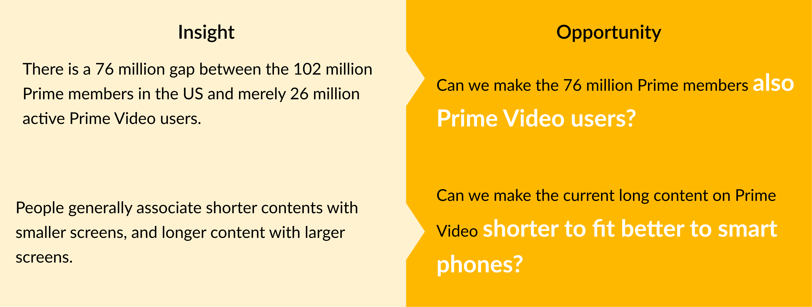
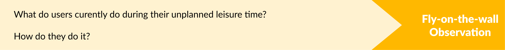
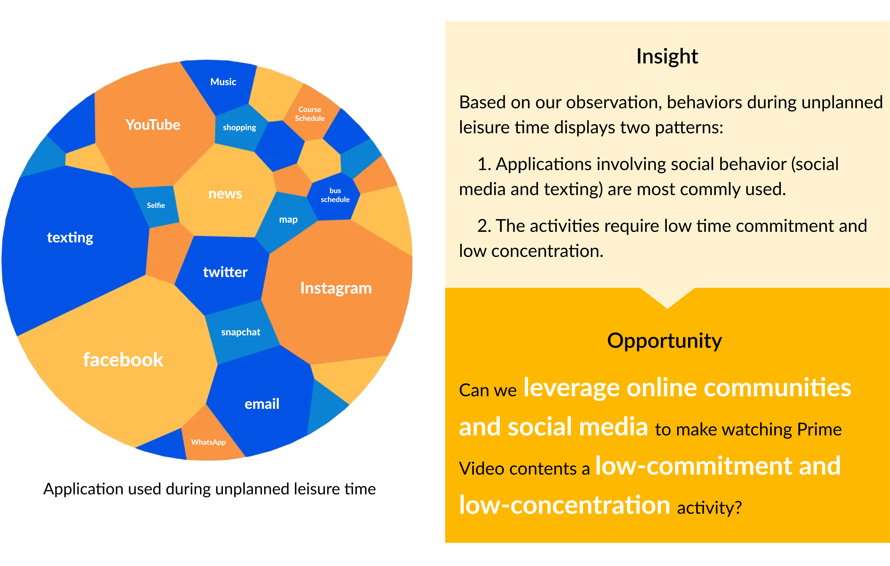
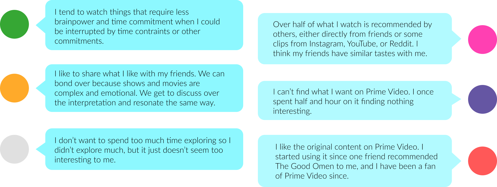
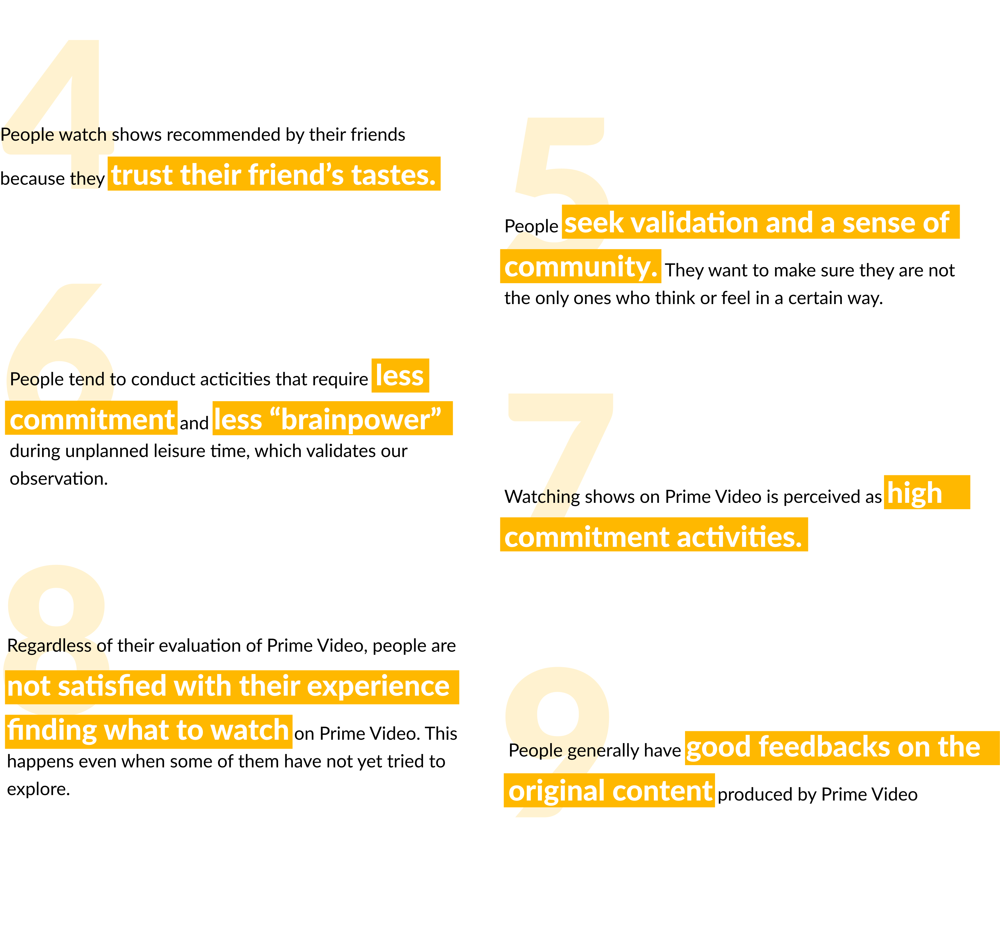
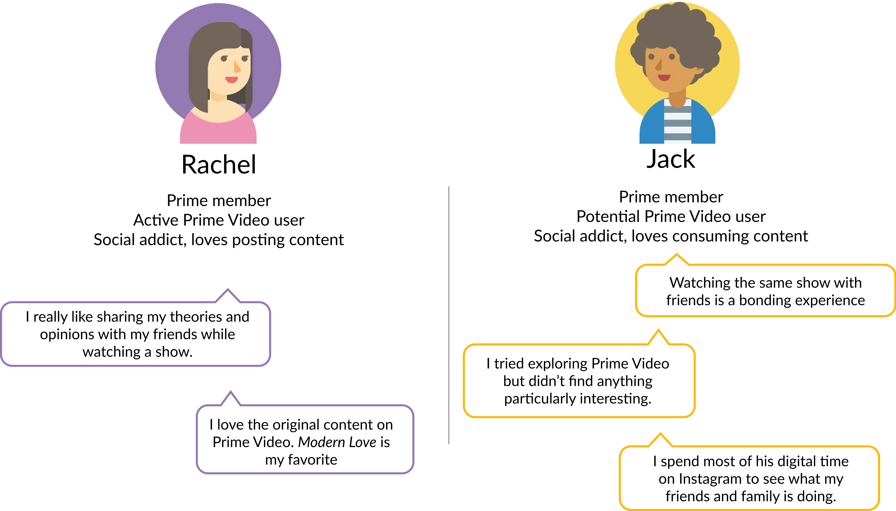
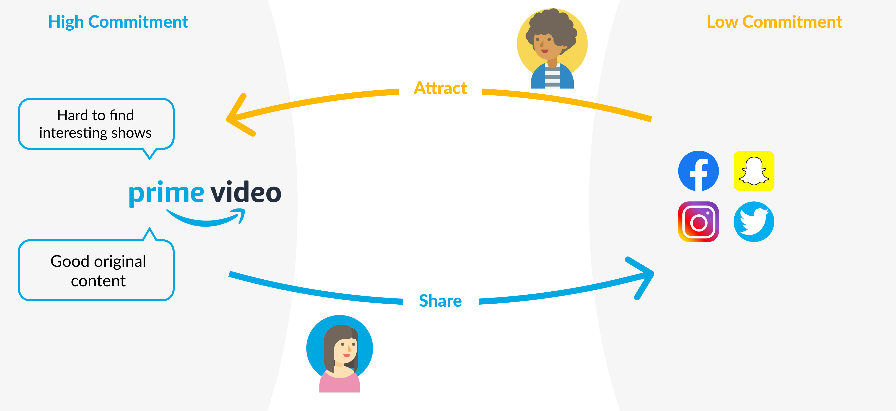

How might we make Amazon Prime Video a destination when people are waiting for coffee?
Overview
Problem Statement
''Amazon Prime Video is a video streaming platform developed by Amazon. How could Prime Video become the destination for TV and movie viewers, outside of times when they are planning to watch something? (i.e. what is our 3-minute coffee line experience?)''
Solution
VideoMark, a feature in Prime Video that allows users to like a moment, select a short clip, and share it with friends directly on Instagram, Facebook, Twitter and beyond. Anyone, who is browsing through their social media while waiting for coffee, can watch not only the shared clip but also up to an additional 6 minutes for free. After the 6-minute period, users can choose to continue watching by purchasing the content or add it to their watchlist on Prime Video.
The Team
Stage One: Asking Questions & Research
A good practice for exploring a problem space is always to start by stating what we know and what we don't know. According to the questions listed, we selected the following methods to empathize with our users:
Question Set One:
Key Insights

Question Set Two:

In order to guide the users' behavior towards Prime Video during their unplanned leisure time such as a three-minute coffee line, we need to understand what their current activities are, and try to find patterns that we can leverage upon. We went to similar environments, including food lounges in shopping malls, coffee shops in school and commercial districts, laundromats, student lounges, restaurant waiting areas, to observe their actions.
Some common activities are listed from most common to least:
Key Insight
Question Set Three
We Individually interviewed 15 participants who varies in age, ethnicity, professions, and living conditions about their experience on video streaming, entertainment, social media usage, Prime Video usage, and Prime membership.
Key Insights

Question Set Four
We got feedbacks from 121 participants. 97.1% of them currently reside in the US, so the result is applicable to the US market only. 79.8% age between 18 and 35, so the result applies to these ages the best. Among the 79% of the participants who are current Prime members, 85.4% of them have been a member for more than a year.
Key Insights
Persona
Stage Two: Innovation Opportunity
To leverage Jack and Rachel’s behavior to make viewing the content of Prime Video a low-commitment activity and attract more users to the Prime Video platform.
In this way, we can move the Prime Video platform from the high-commitment but low-shareability quadrant to the low-commitment but high-shareability quadrant, closer to youtube, allowing more topic and discussion around the content.
Stage Three: Final Concept & Value Proposition
Now, how do we do that exactly? To be specific, how do we encourage viewers to share Prime Video contents to social media with minimum disruption in their viewing experience, and how do we get social media user's interest and guide them to Prime Video in a smooth fashion?
We present VideoMark, a cluster of three features that address the problem. The three features correspond to the insights about video watching behaviors and digital device usage behaviors: